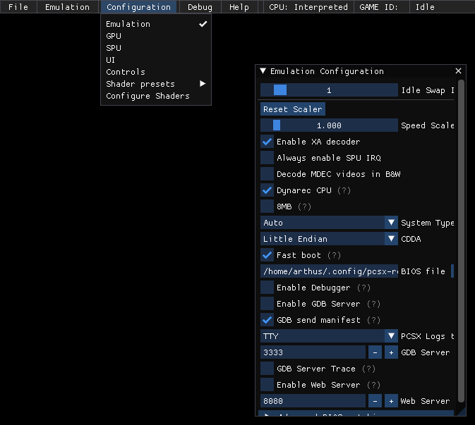
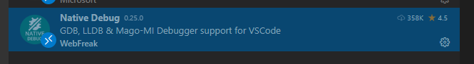
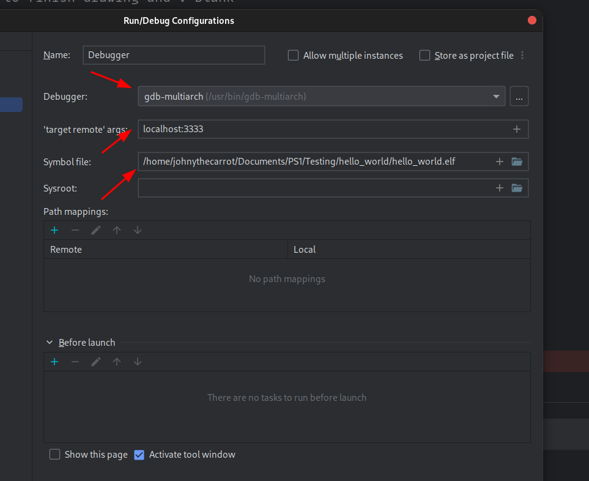

GDB server
The GDB server allows you to set breakpoints and control your PSX program's execution from your gdb compatible IDE.
Enabling the GDB server

In PCSX-Redux: Configuration > Emulation > Enable GDB server.
Make sure the debugger is also enabled.

GDB setup
You need gdb-multiarch on your system :
Windows
Download a pre-compiled version from here : https://static.grumpycoder.net/pixel/gdb-multiarch-windows/
GNU/Linux
Install via your package manager :
1 2 3 4 5 | |
IDE setup
MS VScode
- Install the
Native debugextension :
https://marketplace.visualstudio.com/items?itemName=webfreak.debug

- Adapt your
launch.jsonfile to your environment :
A samplelanuch.jsonfile is available here.
This should go inyour-project/.vscode/.
You need to adapt the values of "executable", "gdbpath" and "autorun" according to your system :
executable
This is the path to your .elf executable :
1 | |
gdbpath
This the path to the gdb-multiarch executable:
1 | |
autorun
1 2 3 4 | |
Make sure that "load your-file.elf" corresponds to the "target" value.
By default, using localhost should work, but if encountering trouble, try using your computer's local IP (e.g; 192.168.x.x, 10.0.x.x, etc.)

Geany
Make sure you installed the official plugins and enable the Scope debugger.
To enable the plugin, open Geany, go to Tools > Plugin manager and enable Scope Debugger.
You can find the debugging facilities in the Debug menu ;

You can find the plugin's documentation here : https://plugins.geany.org/scope.html
.gdbinit
Create a .gdbinit file at the root of your project with the following content, adapting the path to your elf file and the gdb server's ip.
1 2 3 4 | |
Plugin configuration
In Geany : Debug > Setup Program :

CLion
Open the Run/Debug Configurations menu, which you can find here:

Then, add a new Remote Debug configuration:

Finally, set your new configuration up:

.gdbinit
Create a .gdbinit file at the root of your project with the following content, adapting the path to your elf file.
1 2 3 4 5 6 | |
Beginning Debugging
Launch pcsx-redux, then run the debugger from your IDE. It should load the elf file, and execute until the next breakpoint.
Starting debugging in Geany
Source :
https://archive.org/details/pcsx_redux_geany_gdb